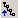

For any node in a tree shown in Type Info browser, you can choose to view only the members and constructors it declares or all accessible members and constructors. This mode is toggled by the Inherited Members button . The following screen shot shows hierarchy mode set for declared members and constructors only:

The following screen shot shows hierarchy mode set for all members: